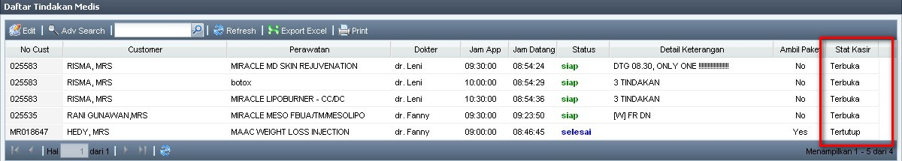
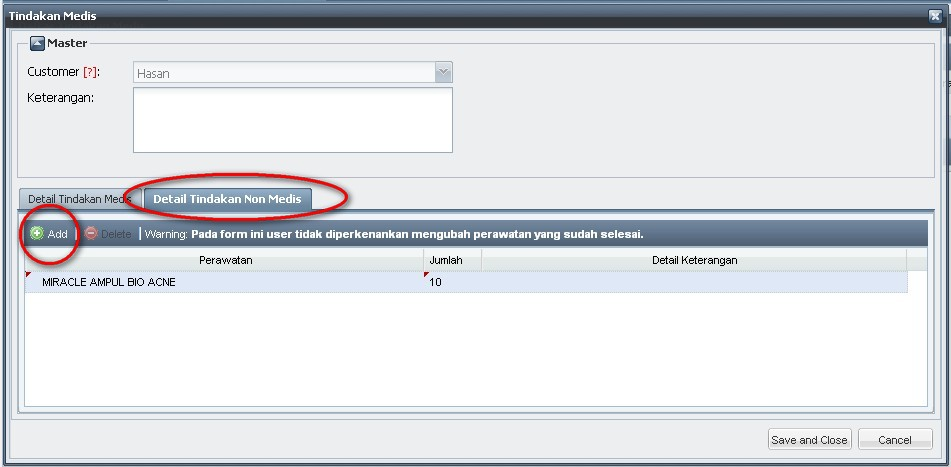
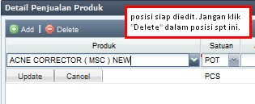

Tambah dan Ubah Tindakan
Tambah Tindakan Medis
- Jika Customer melakukan Tindakan lebih banyak dari yang di-appointment-kan, maka Suster wajib menambahkannya.
- klik pada Customer yang bersangkutan, lalu klik Edit

- Akan muncul form seperti gambar di bawah ini. Klik Add untuk menambahkan perawatan yang sesuai.

- isikan Perawatan yang sesuai, Dokter yang melakukan tindakan, serta Jam App yaitu waktu tindakan dilakukan. Klik Update setiap kali selesai menambahkan Perawatan.
- klik Add kembali jika ingin menambahkan Perawatan yang lain.
- untuk mengubah data dapat dengan klik 2x pada baris data yang bersangkutan. Klik Update setiap kali selesai melakukan perubahan.
- Jika ada Cross Selling, yaitu menambahkan perawatan Non Medis, dapat dilakukan dengan klik tab Detail Tindakan Non Medis lalu tambahkan perawatan Non Medis.

- Jika penambahan atau perubahan perawatan sudah selesai dilakukan, klik Save and Close.
- Perawatan yang telah ditambahkan akan otomatis muncul pada Daftar Tindakan Medis.

- Ubah Status tindakan jika Perawatan sudah "siap" ataupun "selesai".
Copyright © 2010, IT Department of Miracle Aesthetic Clinic Group
Created with the Freeware Edition of HelpNDoc: Easily create Help documents